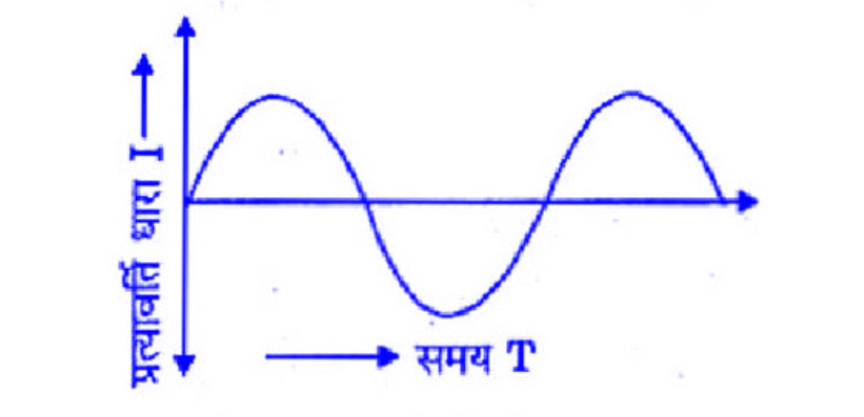
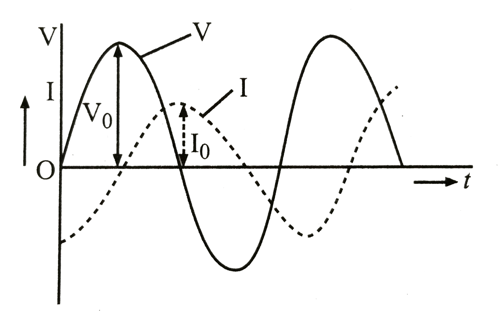
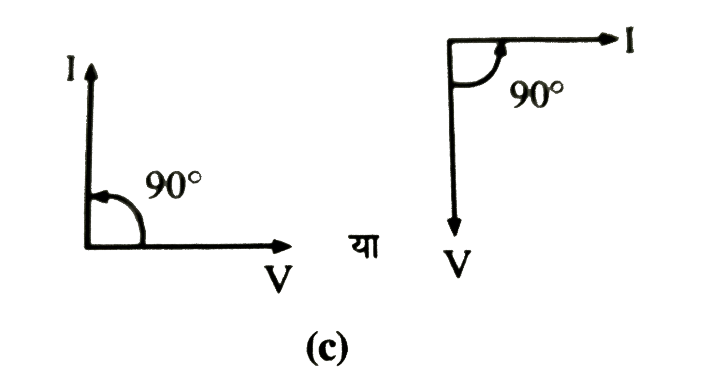
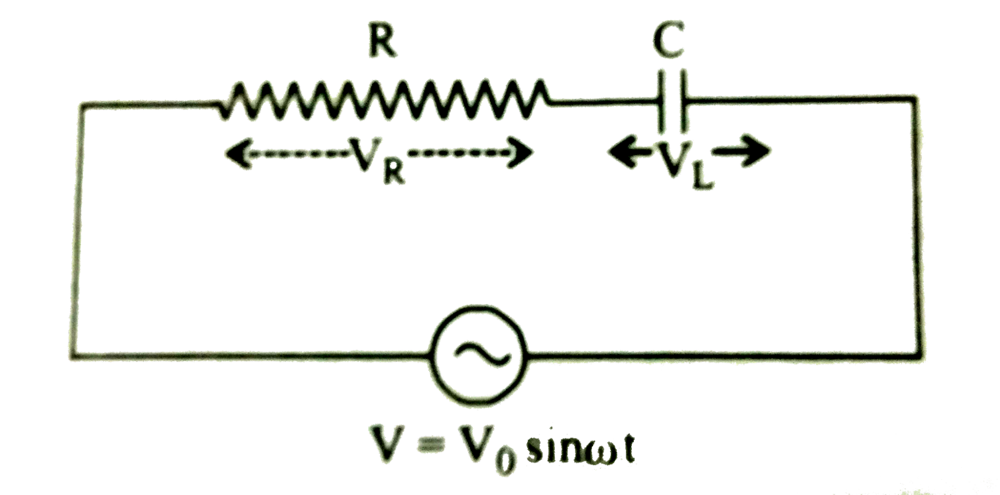
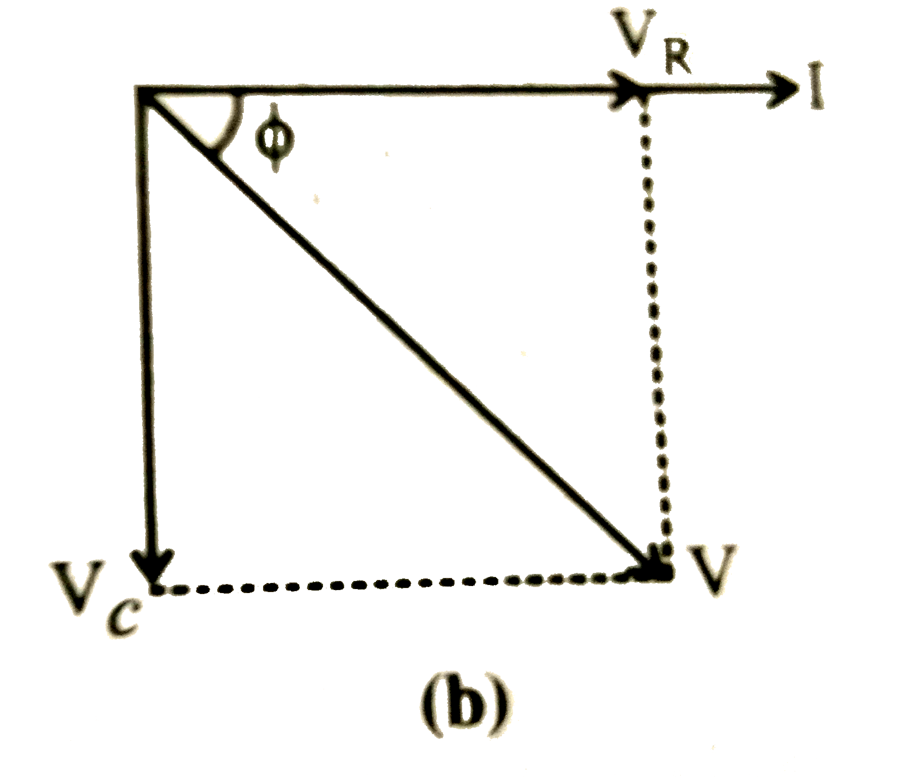
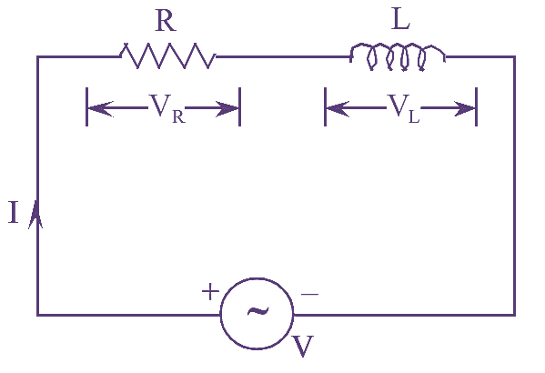
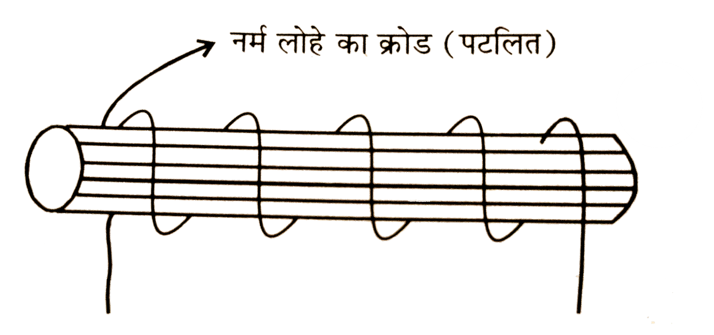
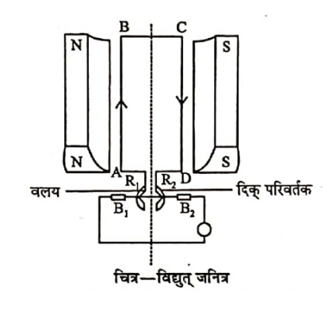

📘 Unit 4(B) - Alternating Current (AC)
Q: What is direct current?
The current whose magnitude and direction remain constant with time is called direct current. This current always flows in one direction only.
Example – current obtained from a battery, cell, or DC generator.
Example – current obtained from a battery, cell, or DC generator.

Q: What is alternating current?
The current whose magnitude as well as direction keep changing continuously with time is called alternating current. It flows in the form of a sine wave. It is represented by the following equation.
$$ I = I_0 \sin\omega t $$
Example – the electric current used in our homes (220 V, 50 Hz).

Q: What are the instantaneous value, peak value and root mean square value of alternating current?
Instantaneous value - The instantaneous value of an alternating current is the value that the current has at a particular instant. Its average value over one complete cycle is zero. Its value is given by-
$$ I = I_0\sin\omega t $$
Peak value - The maximum value of an alternating current is called its amplitude or peak value. It is denoted by \(I_0\).$$ I_0 = \sqrt{2}\, I_{rms} $$
Root mean square (rms) value - The square root of the mean of the squares of the instantaneous values of the alternating current over one complete cycle is called the root mean square value of the alternating current. It is also called the virtual value of the alternating current. It is denoted by \(I_{rms}\).
Q: Write the difference between alternating current and direct current.
| Direct Current (DC) | Alternating Current (AC) |
|---|---|
| The magnitude can change, but the direction remains fixed. | Both the direction and magnitude keep changing. |
| A transformer cannot be used. | A transformer can be used with it. |
| It is not useful for making electromagnets. | This electric current can be used to make electromagnets. |
| Its measuring instruments are based on the magnetic effect. | Its measuring instruments are based on the heating effect. |
| It is relatively less dangerous. | It is dangerous. |
Q: Why are the magnetic and chemical effects of alternating current zero? (Sample paper 2026)
The electric current flows in one direction for half the cycle and in the opposite direction for the other half, so that its average value over a complete cycle is zero. Hence the magnetic and chemical effects of alternating current are zero.
Q: Why can alternating current not be measured with a moving-coil galvanometer?
The average value of alternating current over one complete cycle is zero. Hence alternating current does not exhibit a (net) magnetic effect. Whereas a moving-coil galvanometer is based on the magnetic effect of current. Consequently, alternating current cannot be measured with the help of a moving-coil galvanometer.
Q: On what principle are instruments that measure alternating current (AC) based?
Instruments that measure alternating current (AC) mainly work on the heating (thermal) principle of the current.
Q: Establish the relation between the root mean square value and the peak value of alternating current.
Or
Prove that the root mean square value of the current is \(1/\sqrt{2}\) times its peak value.
Or
Prove that the root mean square value of the current is \(1/\sqrt{2}\) times its peak value.
Let the alternating current at some instant be \(I = I_0\sin\omega t\).
Hence the root mean square value of the alternating current -
Hence the root mean square value of the alternating current -
$$ I^2_{rms} = \frac{1}{T}\int_0^T I^2\,dt $$
$$ I^2_{rms} = \frac{1}{T}\int_0^T (I_0\sin\omega t)^2\,dt $$
$$ I^2_{rms} = \frac{I_0^2}{T}\int_0^T \sin^2\omega t\,dt $$
$$ I^2_{rms} = \frac{I_0^2}{2T}\int_0^T (1-\cos2\omega t)\,dt $$
$$ I^2_{rms} = \frac{I_0^2}{2T}\Big[t-\frac{\sin2\omega t}{2\omega}\Big]_0^T $$
$$ I^2_{rms} = \frac{I_0^2}{2T}\Big[\Big(T-\frac{\sin2\omega T}{2\omega}\Big)-\Big(0-\frac{\sin0}{2\omega}\Big)\Big] $$
$$ I^2_{rms} = \frac{I_0^2}{2T}\Big[T-\frac{\sin2\omega(2\pi/\omega)}{2\omega}\Big] $$
$$ I^2_{rms} = \frac{I_0^2}{2T}\big[T-\frac{\sin4\pi}{2\omega}\big] $$
$$ I^2_{rms} = \frac{I_0^2}{2T}[T-0] $$
$$ I^2_{rms} = \frac{I_0^2}{2} $$
$$ I_{rms} = \frac{I_0}{\sqrt{2}} $$
Q: Why is alternating current more dangerous than direct current? (2025)
Or
Between alternating current and direct current of the same potential, which is safer and why?
Or
Between alternating current and direct current of the same potential, which is safer and why?
In alternating current the potential difference keeps changing continuously. Its virtual (rms) value is usually 220 volts.
Hence its actual maximum value, i.e. peak value -
Whereas in direct current the voltage always remains constant. If the DC voltage is 220 volts, it will always remain 220 volts.
Thus alternating current is more dangerous than direct current.
Hence its actual maximum value, i.e. peak value -
$$ I_0 = \sqrt{2}\,I_{rms} $$
$$ I_0 = 1.41220) $$
$$ I_0 = 331\text{ volts} $$
That is, the voltage of a 220-volt AC supply actually keeps changing between +311 volts and −311 volts.Whereas in direct current the voltage always remains constant. If the DC voltage is 220 volts, it will always remain 220 volts.
Thus alternating current is more dangerous than direct current.
Q: What is the peak-to-peak value of an alternating emf?
It is equal to the sum of the positive peak value and the negative peak value.
That is, the peak-to-peak value of the emf = 2E = 2√20
That is, the peak-to-peak value of the emf = 2E = 2√20
Q: What are resistance, reactance and impedance? Explain.
Resistance - The obstruction offered by a conductor to the path of electric current is called resistance. It is denoted by \(R\).
Reactance - The obstruction produced in the path of alternating current by only an inductor or only a capacitor in an AC circuit is called reactance. It is denoted by \(X\).
Impedance - The obstruction offered by two or more of the components — ohmic resistance, inductor and capacitor — in an AC circuit is called impedance. It is denoted by \(Z\).
Reactance - The obstruction produced in the path of alternating current by only an inductor or only a capacitor in an AC circuit is called reactance. It is denoted by \(X\).
Impedance - The obstruction offered by two or more of the components — ohmic resistance, inductor and capacitor — in an AC circuit is called impedance. It is denoted by \(Z\).
Q: Write the difference between resistance, reactance and impedance.
| Resistance | Reactance | Impedance |
|---|---|---|
| The obstruction offered to the path of electric current is called resistance. | The opposition offered to the path of current by an inductor and capacitor in an AC circuit is called reactance. | The combined opposition offered by ohmic resistance, inductor and capacitor together in an AC circuit is called impedance. |
| It does not depend on frequency. | It depends on frequency. | It depends on frequency. |
| It is denoted by R. | It is denoted by X. | It is denoted by Z. |
Q: A capacitor blocks direct current but allows high-frequency alternating current to pass through, why? (Sample paper 2026)
Direct current always flows in one direction, so its frequency is zero \((f=0)\), which makes its \(X_c\) infinite. Hence a capacitor blocks direct current.
On the other hand, the frequency \((f)\) of alternating current is high, so its \(X_c\) becomes very small. Hence alternating current passes through a capacitor easily.
On the other hand, the frequency \((f)\) of alternating current is high, so its \(X_c\) becomes very small. Hence alternating current passes through a capacitor easily.
Q: What is the resistance of a coil of inductance \(L\) in a direct current circuit?
For direct current, the frequency \(v=0\)
The resistance of the coil in the circuit, i.e. the inductive reactance
The resistance of the coil in the circuit, i.e. the inductive reactance
$$ X_c = \omega L $$
$$ X_c = 2\pi v L $$
$$ X_c = 0 $$
Q: An AC circuit contains only an ohmic resistance. Find the expression for the current and the phase difference between the current and the voltage.

Let the equation of the alternating voltage across the resistance \(R\) at some instant be-
The effective resistance of the circuit -
$$ V = V_0\sin\omega t \quad ...(1) $$
If the value of the current flowing through the resistance \(R\) at the same instant is \(I\), then by Ohm's law \(I=V/R\)$$ I = \frac{V_0\sin\omega t}{R} $$
$$ I = \Big(\frac{V_0}{R}\Big)\sin\omega t $$
$$ I = I_0\sin\omega t \quad ...(2) $$
where \(I_0 = V_0/R\) = the peak value of the alternating current.The effective resistance of the circuit -
$$ R = \frac{V_0}{I_0} $$
Phase difference - From equations (1) and (2) it is clear that the alternating voltage and current are in the same phase.
Q. In an alternating current circuit, only an inductance is connected.
Derive the expression for the current. Find the reactance of the
circuit and the phase difference between current and voltage.

Let the equation of the alternating potential difference across a
pure inductance \(L\) at any instant be-
Reactance - The inductive reactance of the circuit is \(X_L\).
Phase Difference - From equations (1) and (2), it is clear that in a pure inductive alternating current circuit, the current lags behind the voltage by \(\frac{\pi}{2}\) radians or \(90^\circ\).

$$ V = V_0\sin\omega t \quad ...(1) $$
For a pure inductance, the induced electromotive force is equal and
opposite to the applied potential difference. Therefore,
$$ V = L\frac{dI}{dt} $$
$$ V_0\sin\omega t = L\frac{dI}{dt} \quad \text{(By (1))} $$
$$ dI = \frac{V_0}{L}\sin\omega t\,dt $$
On integrating both sides,
$$ I = \frac{V_0}{L}\int\sin\omega t\,dt
\quad
\left(
\because\int\sin\omega t\,dt
=-\frac{\cos\omega t}{\omega}
\right)
$$
$$ I=-\frac{V_0}{\omega L}\cos\omega t $$
$$ I=\frac{V_0}{\omega L}
\sin\left(\omega t-\frac{\pi}{2}\right) $$
Therefore, the expression for the current flowing through the
circuit is-
$$ I=I_0\sin\left(\omega t-\frac{\pi}{2}\right)
\quad ...(2) $$
Where \(I_0=\dfrac{V_0}{\omega L}\) is the peak value of the
alternating current.
Reactance - The inductive reactance of the circuit is \(X_L\).
$$ X_L=\frac{V_0}{I_0} $$
$$ X_L
=\frac{V_0}{V_0/(\omega L)} $$
$$ \boxed{X_L=\omega L} $$
Phase Difference - From equations (1) and (2), it is clear that in a pure inductive alternating current circuit, the current lags behind the voltage by \(\frac{\pi}{2}\) radians or \(90^\circ\).
Q: An AC circuit contains only a capacitor. Find the expression for the current. Find the reactance of the circuit and the phase difference between the current and the voltage.

Let the equation of the alternating voltage across the capacitor \(C\) at some instant be-
Reactance - The effective resistance of the circuit
$$ V = V_0\sin\omega t \quad ...(1) $$
If the charge on the plates of the capacitor \(C\) at the same instant is \(Q\), then$$ Q = CV $$
$$ Q = C(V_0\sin\omega t) $$
$$ Q = (CV_0)\sin\omega t $$
Hence the current flowing in the circuit$$ I = \frac{dQ}{dt} $$
$$ I = \frac{d(CV_0\sin\omega t)}{dt} $$
$$ I = CV_0\,\frac{d(\sin\omega t)}{dt} $$
$$ I = CV_0(\omega\cos\omega t) $$
$$ I = \omega C V_0\sin\Big(\omega t+\frac{\pi}{2}\Big) $$
$$ I = I_0\sin\Big(\omega t+\frac{\pi}{2}\Big) \quad ...(2) $$
where \(I_0 = \omega C V_0\) = the peak value of the alternating current.Reactance - The effective resistance of the circuit
$$ X_c = \frac{V_0}{I_0} $$
$$ X_c = \frac{V_0}{\omega C V_0} $$
$$ X_c = \frac{1}{\omega C} $$
Phase difference - From equations (1) and (2) it is clear that the current leads the alternating potential difference by a phase of \(\pi/2\).

Q: Find the expression for the reactance, phase difference and current in an RC alternating current circuit.

Let the potential difference in an RC circuit at some time be-
Potential difference across the capacitor \(C\), \(V_C = IX_c\)
We know that the current \(I\) and \(V_R\) are in the same phase. The current \(I\) leads the potential difference \(V_C\) by \(\pi/2\).If the resultant potential difference of \(V_R\) and \(V_C\) is \(V\), then by the Pythagoras theorem
$$ V = V_0\sin\omega t \quad ...(1) $$
Potential difference across the resistance \(R\), \(V_R = IR\)Potential difference across the capacitor \(C\), \(V_C = IX_c\)
We know that the current \(I\) and \(V_R\) are in the same phase. The current \(I\) leads the potential difference \(V_C\) by \(\pi/2\).

$$ V^2 = V_R^2 + V_C^2 $$
$$ V^2 = (IR)^2 + (IX_c)^2 $$
$$ V^2 = I^2R^2 + I^2X_c^2 $$
$$ V^2 = I^2(R^2 + X_c^2) $$
$$ \frac{V^2}{I^2} = R^2 + X_c^2 $$
$$ \frac{V}{I} = \sqrt{R^2 + X_c^2} $$
Impedance - The effective resistance of the circuit is called impedance. It is denoted by \(Z_{RC}\).$$ Z_{RC} = \frac{V}{I} $$
$$ Z_{RC} = \sqrt{R^2 + X_c^2} $$
Phase difference - The phase difference \((\theta)\) is the angle between the voltage and the current in an AC circuit. In a right-angled triangle$$ \tan\theta = \frac{\text{perpendicular}}{\text{base}} $$
$$ \tan\theta = \frac{V_c}{V_R} $$
$$ \tan\theta = \frac{IX_c}{IR} $$
$$ \tan\theta = \frac{X_c}{R} $$
$$ \theta = \tan^{-1}\Big(\frac{X_c}{R}\Big) $$
Hence the current flowing in the circuit will be as follows.$$ I = I_0\sin(\omega t+\theta) $$
where \(I_0 = V_0/Z_{RC}\) = the peak value of the alternating current.
Q: Find the expression for the reactance, phase difference and current in an RL alternating current circuit.

Let the potential difference in an RL circuit at some time be-
Potential difference across the inductor \(L\), \(V_L = IX_L\)
We know that the current \(I\) and \(V_R\) are in the same phase. The current \(I\) lags the potential difference \(V_L\) by \(\pi/2\). If the resultant potential difference of \(V_R\) and \(V_L\) is \(V\), then by the Pythagoras theorem
If the resultant potential difference of \(V_R\) and \(V_L\) is \(V\), then by the Pythagoras theorem
$$ V = V_0\sin\omega t \quad ...(1) $$
Potential difference across the resistance \(R\), \(V_R = IR\)Potential difference across the inductor \(L\), \(V_L = IX_L\)
We know that the current \(I\) and \(V_R\) are in the same phase. The current \(I\) lags the potential difference \(V_L\) by \(\pi/2\).
$$ V^2 = V_R^2 + V_L^2 $$
$$ V^2 = (IR)^2 + (IX_L)^2 $$
$$ V^2 = I^2R^2 + I^2X_L^2 $$
$$ V^2 = I^2(R^2 + X_L^2) $$
$$ \frac{V^2}{I^2} = R^2 + X_L^2 $$
$$ \frac{V}{I} = \sqrt{R^2 + X_L^2} $$
Impedance - The effective resistance of the circuit is called impedance. It is denoted by \(Z_{RL}\).$$ Z_{RL} = \frac{V}{I} $$
$$ Z_{RL} = \sqrt{R^2 + X_L^2} $$
Phase difference - The phase difference \((\theta)\) is the angle between the voltage and the current in an AC circuit. In a right-angled triangle$$ \tan\theta = \frac{\text{perpendicular}}{\text{base}} $$
$$ \tan\theta = \frac{V_L}{V_R} $$
$$ \tan\theta = \frac{IX_L}{IR} $$
$$ \tan\theta = \frac{X_L}{R} $$
$$ \theta = \tan^{-1}\Big(\frac{X_L}{R}\Big) $$
Hence the current flowing in the circuit will be as follows.$$ I = I_0\sin(\omega t-\theta) $$
where \(I_0 = V_0/Z_{RL}\) = the peak value of the alternating current.
Q: Find the expression for the reactance, phase difference and current in an LC alternating current circuit.

Let the potential difference in an LC circuit at some time be-
Potential difference across the capacitor \(C\), \(V_C = IX_c\)
We know that the current \(I\) lags the potential difference \(V_L\) by \(\pi/2\). The current \(I\) leads the potential difference \(V_C\) by \(\pi/2\).
Hence if the resultant potential difference of \(V_L\) and \(V_C\) is \(V\), then by the Pythagoras theorem
$$ V = V_0\sin\omega t \quad ...(1) $$
Potential difference across the inductor \(L\), \(V_L = IX_L\)Potential difference across the capacitor \(C\), \(V_C = IX_c\)
We know that the current \(I\) lags the potential difference \(V_L\) by \(\pi/2\). The current \(I\) leads the potential difference \(V_C\) by \(\pi/2\).
Hence if the resultant potential difference of \(V_L\) and \(V_C\) is \(V\), then by the Pythagoras theorem
$$ V = V_L - V_c $$
$$ V = IX_L - IX_c $$
$$ V = I(X_L - X_c) $$
$$ \frac{V}{I} = X_L - X_c $$
Impedance - The effective resistance of the circuit is called impedance. It is denoted by \(Z_{LC}\).$$ Z_{LC} = \frac{V}{I} $$
$$ Z_{LC} = X_L - X_c $$
Phase difference - The phase difference \((\theta)\) is the angle between the voltage and the current in an AC circuit.$$ \theta = \frac{\pi}{2} $$
Hence the current flowing in the circuit will be as follows.$$ I = I_0\sin\Big(\omega t+\frac{\pi}{2}\Big) $$
where \(I_0 = V_0/Z_{LC}\) = the peak value of the alternating current.
Q: What is resonance? Find the resonant frequency for an LC alternating current circuit.
Resonance - When the inductive reactance \(X_L\) and the capacitive reactance \(X_c\) of an alternating current (AC) circuit become equal, it is called resonance.
That is, at resonance
At resonance
That is, at resonance
- \(Z_{LC} = 0\) (minimum)
- \(X_L = X_c\)
- Current \(I\) is maximum
At resonance
$$ Z_{LC} = 0 $$
$$ X_L - X_c = 0 $$
$$ X_L = X_c $$
$$ \omega L = \frac{1}{\omega C} $$
$$ \omega^2 = \frac{1}{LC} $$
$$ \omega = \frac{1}{\sqrt{LC}} $$
$$ 2\pi f_0 = \frac{1}{\sqrt{LC}} $$
$$ f_0 = \frac{1}{2\pi\sqrt{LC}} $$
Q: What is the Q-factor? Write its formula and the conditions for its value to be high.
The Q-factor is a measure of the quality of a resonant circuit. It indicates how low the energy loss in the circuit is and how sharp the resonance is.
Formula for the Q-factor
Formula for the Q-factor
$$ Q = \frac{\text{resonant frequency}}{\text{bandwidth}} $$
Conditions for a high Q-factor- Energy loss should be very low.
- Resistance should be low.
- The resonance should be sharp.
- The bandwidth should be small.
- Damping in the circuit should be minimum.
Q: (Very important) Find the expression for the reactance, phase difference and current in an LCR alternating current circuit.

Let the potential difference in an LCR circuit at some time be-
Potential difference across the inductor \(L\), \(V_L = IX_L\)
We know that the current \(I\) and \(V_R\) are in the same phase. The current \(I\) lags the potential difference \(V_L\) by \(\pi/2\). The current \(I\) leads the potential difference \(V_C\) by \(\pi/2\).Hence the resultant of \(V_L\) and \(V_C\) will be \((V_L - V_C)\), whose direction will be the same as the direction of \(V_L\). Now if the resultant potential difference of \(V_R\) and \((V_L - V_C)\) is \(V\), then by the Pythagoras theorem
$$ V = V_0\sin\omega t \quad ...(1) $$
Potential difference across the resistance \(R\), \(V_R = IR\)Potential difference across the inductor \(L\), \(V_L = IX_L\)
We know that the current \(I\) and \(V_R\) are in the same phase. The current \(I\) lags the potential difference \(V_L\) by \(\pi/2\). The current \(I\) leads the potential difference \(V_C\) by \(\pi/2\).
$$ V^2 = V_R^2 + (V_L - V_c)^2 $$
$$ V^2 = (IR)^2 + (IX_L - IX_c)^2 $$
$$ V^2 = I^2R^2 + I^2(X_L - X_c)^2 $$
$$ V^2 = I^2\big[R^2 + (X_L - X_c)^2\big] $$
$$ \frac{V^2}{I^2} = R^2 + (X_L - X_c)^2 $$
$$ \frac{V}{I} = \sqrt{R^2 + (X_L - X_c)^2} $$
Impedance - The effective resistance of the circuit is called impedance. It is denoted by \(Z_{LCR}\).$$ Z_{LCR} = \frac{V}{I} $$
$$ Z_{LCR} = \sqrt{R^2 + (X_L - X_c)^2} $$
Phase difference - The phase difference \((\theta)\) is the angle between the voltage and the current in an AC circuit. In a right-angled triangle$$ \tan\theta = \frac{\text{perpendicular}}{\text{base}} $$
$$ \tan\theta = \frac{V_L-V_c}{V_R} $$
$$ \tan\theta = \frac{IX_L-IX_c}{IR} $$
$$ \tan\theta = \frac{I(X_L-X_c)}{IR} $$
$$ \tan\theta = \frac{X_L-X_c}{R} $$
$$ \theta = \tan^{-1}\Big[\frac{X_L-X_c}{R}\Big] $$
Hence the current flowing in the circuit will be as follows.$$ I = I_0\sin(\omega t+\theta) $$
where \(I_0 = V_0/Z_{RL}\) = the peak value of the alternating current.
Q19: What will be the value of the impedance in a series resonant L-C-R circuit?
Impedance in an L-C-R circuit
$$ Z_{LCR} = \sqrt{R^2 + (X_L-X_c)^2} $$
At resonance$$ X_L = X_c $$
Hence the impedance of the circuit$$ Z_{LCR} = \sqrt{R^2 + (0)^2} $$
$$ Z_{LCR} = \sqrt{R^2} $$
$$ Z_{LCR} = R $$
Hence the impedance will be equal to the resistance.
Q: Prove that for an alternating current circuit \(P_{av} = V_{rms}I_{rms}\cos\varphi\). (2025)
Let the alternating potential difference and the alternating current at some instant be as follows.
Apparent power = \(V_{rms}I_{rms}\)
Power factor = \(\cos\varphi\)
$$ V = V_0\sin\omega t $$
$$ I = I_0\sin\omega t $$
Hence the average power for one complete cycle$$ P_{av} = VI $$
$$ P_{av} = [V_0\sin\omega t][I_0\sin(\omega t-\varphi)] $$
$$ P_{av} = V_0I_0\,\sin\omega t\sin(\omega t-\varphi) $$
$$ P_{av} = V_0 I_0\,\sin\omega t(\sin\omega t\cos\varphi-\cos\omega t\sin\varphi) $$
$$ P_{av} = V_0 I_0\,(\sin^2\omega t\cos\varphi-\sin\omega t\cos\omega t\sin\varphi) $$
But we know that for one complete cycle$$ \overline{\sin^2\omega t} = \frac{1}{2}\ \text{and}\ \overline{\sin\omega t\cos\omega t} = 0 $$
Hence$$ P_{av} = V_0 I_0\Big[\Big(\frac{1}{2}\Big)\cos\varphi - 0\Big] $$
$$ P_{av} = V_0 I_0\Big[\frac{1}{2}\cos\varphi\Big] $$
$$ P_{av} = \Big(\frac{V_0}{\sqrt{2}}\Big)\Big(\frac{I_0}{\sqrt{2}}\Big)\cos\varphi $$
$$ P_{av} = V_{rms}\,I_{rms}\cos\varphi $$
$$ P_{av} = \text{apparent power}\times\text{power factor} $$
whereApparent power = \(V_{rms}I_{rms}\)
Power factor = \(\cos\varphi\)
Q: What is meant by wattless current?
If a current flows in an alternating current circuit, but the average power consumed is zero, then that current is called wattless current.
Q: Under what condition is a current wattless?
A current is wattless when an alternating current circuit contains pure inductance or pure capacitance, because in this condition there is a phase difference of \(\pi/2\) between the current and the voltage. Consequently, the average power consumed is zero.
$$ P_{av} = V_{rms}I_{rms}\cos\varphi $$
$$ P_{av} = V_{rms}I_{rms}\cos\Big(\frac{\pi}{2}\Big) $$
$$ P_{av} = V_{rms}I_{rms}\times0 $$
$$ P_{av} = 0 $$
Q: What is the principle of a choke coil? Explain its use for controlling current.

Principle - To control the value of current in an alternating current circuit, a coil of very low resistance and high inductance is used. This causes very little energy loss in the circuit. This coil is called a choke coil.
If an alternating current circuit contains only pure inductance and the resistance of the soft-iron core is zero, then there is a phase difference of \(90^\circ\) between the emf and the current. In this condition the average power of the circuit
Construction - A choke coil is made by winding many turns of thick, insulated copper wire on a soft-iron core.
Use - By placing a choke coil in an alternating current circuit, the value of the alternating current is controlled. The reactance of the coil \(X_L = \omega L\); hence if the inductance of the choke coil is high, the value of the current decreases, and if the inductance is low, the value of the current increases. In this process the dissipation of electrical energy as heat energy is negligible.
If an alternating current circuit contains only pure inductance and the resistance of the soft-iron core is zero, then there is a phase difference of \(90^\circ\) between the emf and the current. In this condition the average power of the circuit
$$ P_{av} = V_{rms}I_{rms}\cos\varphi $$
$$ P_{av} = V_{rms}I_{rms}\cos\Big(\frac{\pi}{2}\Big) $$
$$ P_{av} = V_{rms}I_{rms}\times0 $$
$$ P_{av} = 0 $$
Hence there is no dissipation of energy at all, but in practice the resistance can never be zero. Hence some part of the electrical energy keeps getting dissipated as heat energy.Construction - A choke coil is made by winding many turns of thick, insulated copper wire on a soft-iron core.
Use - By placing a choke coil in an alternating current circuit, the value of the alternating current is controlled. The reactance of the coil \(X_L = \omega L\); hence if the inductance of the choke coil is high, the value of the current decreases, and if the inductance is low, the value of the current increases. In this process the dissipation of electrical energy as heat energy is negligible.
Q: Why is the current flowing in a choke coil called wattless current? (2018)
A choke coil is made of copper wire whose resistance is negligible. Also, because of the phase difference of \(\pi/2\) between the current and the voltage, the average power consumed is zero. Hence the current flowing in a choke coil is a wattless current.
Q: Why is inductance more suitable than resistance for reducing the value of alternating current?
If resistance is used to reduce the value of alternating current, some part of the electrical energy gets dissipated as heat energy, whereas if inductance is used, since its power factor is zero, there is no dissipation of energy at all.
Q: What is a transformer? Explain the types, construction, principle and working of a transformer. (2021/23/Sample paper 2026)
A transformer is a device that increases or decreases an alternating potential difference, but its frequency and power remain the same.
Types - It is of two types. Construction of a transformer - A transformer mainly has three parts.
Construction of a transformer - A transformer mainly has three parts.
Working and derivation of the formula - Let the number of turns in the primary and secondary coils be \(N_p\) and \(N_s\) respectively. If the magnetic flux linked with the primary coil at some instant is \(\phi\), then the emf induced in it
Types - It is of two types.
- Step-up transformer - This converts a low potential difference into a high potential difference. In this, the number of turns in the secondary coil is more than in the primary coil.
Example – to raise the voltage to a very high value (11 kV → 220 kV) at a power station. - Step-down transformer - This converts a high potential difference into a low potential difference. In this, the number of turns in the secondary coil is less than in the primary coil.
Example – converting 220 V AC into 12 V or 6 V (used in household appliances).
- Iron core - It is made of sheets of soft laminated iron. The primary and secondary coils are wound on this core.
- Primary coil - This is connected to the electrical source (AC supply).
- Secondary coil - This is connected to the circuit where the increased or decreased potential difference is obtained.
Working and derivation of the formula - Let the number of turns in the primary and secondary coils be \(N_p\) and \(N_s\) respectively. If the magnetic flux linked with the primary coil at some instant is \(\phi\), then the emf induced in it
$$ e_p = -N_p\frac{d\phi}{dt} \quad ...(1) $$
If there is no leakage of magnetic flux, then the magnetic flux linked with the secondary coil will also be \(\phi\). Hence the emf induced in the secondary coil$$ e_s = -N_s\frac{d\phi}{dt} \quad ...(2) $$
Dividing equation (2) by (1)-$$ \frac{e_s}{e_p} = \frac{N_s}{N_p} \quad ...(3) $$
Also, we know that for an ideal transformer input power = output power$$ e_sI_s = e_pI_p $$
$$ \frac{e_s}{e_p} = \frac{I_p}{I_s} \quad ...(4) $$
From equations (3) and (4)-$$ \frac{e_s}{e_p} = \frac{N_s}{N_p} = \frac{I_p}{I_s} = r $$
where \(r\) is the turns ratio (transformation ratio). This is the principle of the transformer. (2023/26, 2021/23/Sample paper 2026)
Q: Write the various causes of energy loss in a transformer and the measures to reduce them. (2023/26)
Although the efficiency of a transformer is very high (95%–99%), there is still some energy loss in it. Taken together, these losses are called energy loss.
1. Copper loss - Heat is produced when current flows through the copper wires of the primary and secondary coils due to their resistance. This loss is called \(I^2R\) loss.
2. Iron loss - This loss occurs in the iron core due to the alternating flux. It is of two types –
(i) Hysteresis loss – due to repeated realignment of the magnetic domains in the iron core.
(ii) Eddy current loss – heat is produced due to the current induced in the core by the changing flux.
3. Leakage flux loss - Some magnetic flux passes outside the core and fails to link with the secondary coil. This reduces the efficiency of the transformer.
Measures to reduce energy loss
1. Copper loss - Heat is produced when current flows through the copper wires of the primary and secondary coils due to their resistance. This loss is called \(I^2R\) loss.
2. Iron loss - This loss occurs in the iron core due to the alternating flux. It is of two types –
(i) Hysteresis loss – due to repeated realignment of the magnetic domains in the iron core.
(ii) Eddy current loss – heat is produced due to the current induced in the core by the changing flux.
3. Leakage flux loss - Some magnetic flux passes outside the core and fails to link with the secondary coil. This reduces the efficiency of the transformer.
Measures to reduce energy loss
- Using thick copper wires of low resistance.
- Making the core of thin laminated sheets.
- Using good quality iron material.
- Designing the transformer so that leakage flux is minimum.
Q: How is the effect of eddy currents reduced in a transformer?
Or
Why are the cores of transformers made laminated? (2025)
Or
Why are the cores of transformers made laminated? (2025)
The effect of eddy currents is reduced by making the core of a transformer laminated. Lamination of the core greatly increases its resistance. Hence the strength of the eddy currents produced becomes very low. In this way the dissipation of electrical energy as heat energy is prevented.
Q: How is the core of a transformer made laminated?
Instead of a single uniform piece of iron, the core of a transformer is made of thin sheets of iron.
Several rectangular strips made of soft iron are taken. The rectangular portion between them is cut and separated. These strips are given a coating of insulating material and joined together to form the required thickness. This is called a laminated core.
Several rectangular strips made of soft iron are taken. The rectangular portion between them is cut and separated. These strips are given a coating of insulating material and joined together to form the required thickness. This is called a laminated core.
Q: Write the uses of a transformer.
A transformer is used in electrical appliances that operate at a voltage other than that obtained from the mains supply.
- A step-up transformer is used in the transmission of electricity at a generating station. A step-up transformer is also used to provide a high accelerating voltage in televisions, wireless equipment and X-ray tubes.
- A step-down transformer is used in electric bells, in valve heaters in radio sets, with night lamps (to reduce 220 volts to 6 volts), for welding purposes, and in electrical sub-stations to reduce the voltage before distribution to consumers.
Q: Write the difference between a step-up and a step-down transformer.
| Step-up transformer | Step-down transformer |
|---|---|
| It increases the alternating potential difference. | It decreases the alternating potential difference. |
| It decreases the strength of the current. | It increases the strength of the current. |
| The number of turns in its secondary coil is more than in the primary coil. | The number of turns in its secondary coil is less than in the primary coil. |
| Its turns ratio is greater than 1. | Its turns ratio is less than 1. |
Q: What is a dynamo (generator)? Write its principle. (2022)
The device with the help of which mechanical energy is converted into electrical energy is called a dynamo.
A dynamo is of the following two types.
A dynamo is of the following two types.
- AC dynamo - This converts mechanical work into electrical energy in the form of alternating current.
- DC dynamo - This converts mechanical work into electrical energy in the form of direct current.
Q: What is an AC dynamo? Write its construction and working.

A dynamo that converts mechanical work into electrical energy in the form of alternating current is called an AC dynamo. Its working is based on electromagnetic induction.
Construction - An AC dynamo has the following parts:
Suppose the armature is rotating anticlockwise and at some instant its arm AB is moving upward while CD is moving downward. Then the direction of the current will be DCBA, and in the external circuit the current will flow from \(B_1\) to \(B_2\).
After half a cycle, the positions of the arms are reversed. Now CD moves upward and AB moves downward. At this time the direction of the current will be ABCD, and in the external circuit the current will flow from \(B_2\) to \(B_1\).
As a result, the current flowing in the external circuit is an alternating current, which is expressed by the equation \(I=I_0\sin\omega t\).
Construction - An AC dynamo has the following parts:
- Field magnet: This is a horseshoe-shaped permanent magnet that produces the magnetic field.
- Armature: This is a rectangular coil made of copper wires, wound on an iron core, which can rotate freely in the magnetic field.
- Slip rings: The two slip rings \(S_1\) and \(S_2\) connected to the ends of the armature reverse the direction of the current after every half cycle, so that current in both directions is obtained in the external resistance \(R\).
- Brushes: Flexible pieces of metal \(B_1\) and \(B_2\) that maintain contact with the slip rings and are connected to the external resistance \(R\).
Suppose the armature is rotating anticlockwise and at some instant its arm AB is moving upward while CD is moving downward. Then the direction of the current will be DCBA, and in the external circuit the current will flow from \(B_1\) to \(B_2\).
After half a cycle, the positions of the arms are reversed. Now CD moves upward and AB moves downward. At this time the direction of the current will be ABCD, and in the external circuit the current will flow from \(B_2\) to \(B_1\).
As a result, the current flowing in the external circuit is an alternating current, which is expressed by the equation \(I=I_0\sin\omega t\).
Q: What is a DC dynamo? Write its construction and working.

A dynamo that converts mechanical work into electrical energy in the form of direct current is called a DC dynamo. Its working is based on electromagnetic induction.
Construction - A DC dynamo has the following parts:
Suppose the armature is rotating anticlockwise and at some instant its arm AB is moving upward while CD is moving downward. Then the direction of the current will be DCBA, and in the external circuit the current will flow from \(B_1\) to \(B_2\).
After half a cycle, the positions of the arms are reversed. Now CD moves upward and AB moves downward. At this time the direction of the current will be ABCD, and in the external circuit the current will still flow from \(B_1\) to \(B_2\).
As a result, the current flowing in the external circuit is direct current.
Construction - A DC dynamo has the following parts:
- Field magnet: This is a horseshoe-shaped permanent magnet that produces the magnetic field.
- Armature: This is a rectangular coil made of copper wires, wound on an iron core, which can rotate freely in the magnetic field.
- Split rings (commutator): The two split rings \(C_1\) and \(C_2\) connected to the ends of the armature keep the direction of the current the same after every half cycle, so that current in only one direction is obtained in the external resistance \(R\).
- Brushes: Flexible pieces of metal \(B_1\) and \(B_2\) that maintain contact with the split rings and are connected to the external resistance \(R\).
Suppose the armature is rotating anticlockwise and at some instant its arm AB is moving upward while CD is moving downward. Then the direction of the current will be DCBA, and in the external circuit the current will flow from \(B_1\) to \(B_2\).
After half a cycle, the positions of the arms are reversed. Now CD moves upward and AB moves downward. At this time the direction of the current will be ABCD, and in the external circuit the current will still flow from \(B_1\) to \(B_2\).
As a result, the current flowing in the external circuit is direct current.
Q: Write the difference between an AC dynamo and a DC dynamo.
| S.No. | AC dynamo (alternating current generator) | DC dynamo (direct current generator) |
|---|---|---|
| 1. | It produces alternating current (AC). | It produces direct current (DC). |
| 2. | It uses slip rings. | It uses a split-ring commutator. |
| 3. | The direction of the current keeps changing periodically. | The direction of the current always remains the same. |
| 4. | Its construction is simple. | Its construction is relatively complex. |
| 5. | It is used for large-scale power generation at power houses. | It is used for charging batteries, electric motors, etc. |
Q: What is a DC motor? Write its construction and working.

The device that converts electrical energy into mechanical energy is called a DC motor (direct current motor). It is based on the principle of the electromagnetic force.
Construction - The main parts of a DC motor are as follows –
The forces acting on the left and right arms are in opposite directions, causing the armature to rotate. After every half cycle, the split ring (commutator) reverses the direction of the current so that the armature always keeps rotating in the same direction. In this way electrical energy is converted into mechanical rotational energy.
Construction - The main parts of a DC motor are as follows –
- Field magnet: This is a horseshoe-shaped permanent magnet that produces the magnetic field.
- Armature: This is a rectangular coil made of copper wires, wound on an iron core, which can rotate freely in the magnetic field.
- Split rings (commutator): The two split rings \(C_1\) and \(C_2\) connected to the ends of the armature reverse the direction of the current after every half cycle, so that the armature keeps rotating continuously in the same direction.
- Brushes: Flexible pieces of metal \(B_1\) and \(B_2\) that maintain contact with the split rings and carry current from the external circuit.
The forces acting on the left and right arms are in opposite directions, causing the armature to rotate. After every half cycle, the split ring (commutator) reverses the direction of the current so that the armature always keeps rotating in the same direction. In this way electrical energy is converted into mechanical rotational energy.
Q: Write the difference between a DC dynamo and a DC motor.
| S.No. | DC dynamo (electric generator) | DC motor (electric motor) |
|---|---|---|
| 1. | It converts mechanical energy into electrical energy. | It converts electrical energy into mechanical energy. |
| 2. | Its working principle is based on electromagnetic induction. | Its working principle is based on the magnetic force. |
| 3. | In this, the armature is rotated by an external mechanical force. | In this, the armature rotates on its own due to the flow of current. |
| 4. | It produces current. | It does work, i.e. produces rotation. |
| 5. | It is used for generating electricity. | It is used for running fans, toys, machines, etc. |
15 Multiple Choice Questions (MCQs)
- What is the frequency of alternating current in India?
Answer: 50 Hertz - What is the unit of alternating current frequency?
Answer: Hertz (Hz) - For what time interval is the average value of alternating current zero?
Answer: For one complete cycle - Which instrument is used to measure alternating current?
Answer: AC ammeter - What is the device called that converts direct current into alternating current?
Answer: Inverter - What is the RMS value of alternating current?
Answer: 1/√2 times the maximum value - What gives the average value of electrical power?
Answer: \(P = V_{rms}I_{rms}\cos\phi\) - In what range does the value of the power factor lie?
Answer: Between 0 and 1 - In an LCR circuit, if the reactance is zero, what is this condition of the circuit called?
Answer: Resonance - What is the angle between the current and potential difference in an ideal inductor?
Answer: 90° - What is the angle between the current and potential difference in a pure capacitor?
Answer: 90° - When is the power of alternating current maximum?
Answer: When φ = 0° (the current and potential difference are in the same phase) - What is the instantaneous equation of an alternating voltage?
Answer: \(E = E_0\sin\omega t\) - On what principle does a transformer work?
Answer: On the principle of electromagnetic induction - How many times does the direction of alternating current change?
Answer: Twice in each cycle
Fill in the Blanks
- Alternating current keeps changing __________ with time.
Answer: direction and magnitude - One complete wave of alternating current is called a __________.
Answer: cycle - The virtual value of alternating current is __________ of its peak value.
Answer: 1/√2 - When φ = 90°, the value of power in the circuit is __________.
Answer: zero - The working principle of a transformer is based on __________.
Answer: electromagnetic induction
Match the Following
| A | B |
|---|---|
| 1. Inductor | (c) Current lags the potential difference by 90° |
| 2. Capacitor | (a) Current leads the potential difference by 90° |
| 3. Resonance condition | (d) Inductive and capacitive reactance equal |
| 4. Power factor | (b) cosφ |
| 5. Transformer | (e) To increase or decrease the alternating voltage |
Correct answer sequence: 1-c, 2-a, 3-d, 4-b, 5-e
State True or False
- The average value of alternating current is always zero. – False
- A transformer works on direct current. – False
- In an inductor, the current lags the potential difference. – True
- At resonance, the impedance of the circuit is minimum. – True
- The higher the power factor, the lower the power loss. – True